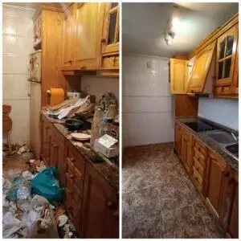

Estudio de un Caso de Acaparadora Compulsiva Real.
El acaparamiento afecta aproximadamente del 2% al 5% de la población y anteriormente se ha considerado un síntoma de trastorno obsesivo-compulsivo (TOC).
Pero investigaciones recientes han encontrado que el acaparamiento es un trastorno independiente.

¿Preocupado de que tú o un ser querido pueda ser un acaparador? Lea los hechos y síntomas en nuestro artículo sobre el Trastorno de Síndrome de Diógenes].
Entonces, ¿cómo es vivir con un acaparador?
Lee la historia de una mujer que creció siendo hija de un acaparador.
CUANDO TU MADRE eS ACAPARADORA COMPULSIVA
Cuando me preguntan con qué frecuencia visito a mi madre, tiendo a murmurar algo sobre lo lejos que está.
¿Cómo puedo admitir la verdadera razón?
Que no es la distancia, sino que literalmente no hay espacio para que nos quedemos. Y no hablo de habitaciones libres, tampoco, porque hay algunas de ellas.
Mi madre sufre Síndrome de Diógenes.
Se siente un poco raro decir la palabra acaparador compulsivo incluso ahora. Probablemente porque durante treinta años de mi vida no tuve una palabra para ello o incluso no supe que había una, y mucho menos que era un problema de salud mental o un trastorno. Sólo sabía que al crecer nuestra casa era un desastre. Desastre con D mayúscula.
Es curioso las respuestas que solía obtener si trataba de explicarle a alguien que crecí con una madre que era un acaparadora compulsiva.
Cosas como, "Oh sí, lo sé, mi madre coleccionaba copias viejas del HOLA". No. Coleccionar números atrasados de una revista no te convierte en un acaparador.
Tener una habitación de baratijas bien desempolvado no te hace un acaparador.
¿Tener habitaciones enteras en tu casa a las que no puedes entrar porque están llenas de basura, papeles, cajas y ropa?
Eso te hace un acaparador. Al igual que un rellano con montones de marcos vacíos, tazas de té extrañas, un ovillo de lana al azar, y zapatos que no combinan.
A veces, podía convencerme de que éramos normales. Cuando cenábamos, limpiábamos y poníamos la mesa como una familia normal.
Es que había tantas cosas en la mesa que al principio fueron transferidas al sofá mientras comíamos.
Y luego estaba el olor. Nuestra casa siempre apestaba a trapos sucios y a comida abandonada. Eso es porque estaba sucia, y porque había comida abandonada para pudrirse.
La encontrabas debajo de una cama o en un aparador. Recuerdo un huevo duro abandonado en el suelo una vez, y fruta fresca que se había convertido en fruta seca por sí misma.
Cuando era niño, ¿me importaba? Absolutamente. Estaba avergonzada, avergonzada y, en general, mortificada. La gente de la escuela venía de vez en cuando y yo me paseaba de antemano, indefensa, preguntándome cómo podría hacer que parezca normal. Veía a mi madre hacer lo mismo, riéndose cuando venía gente y diciendo cosas como: "¡Oh, nos atrapaste en medio del desastre!"
Mi padre se distraía yendo a trabajar, cavando el jardín y jugando al golf. ¿Y yo? Traté de ser una chica normal. Pero pasé más tiempo llorando en mi habitación de lo que era normal.
Llegué a la edad en que la vergüenza significaba que no tendría a nadie nunca más, no si podía evitarlo. Pero eso creó problemas. Tenía una increíble mejor amiga que me invitaba a quedarme en su casa prácticamente todos los viernes. Me encantaba que tuviera la ropa de cama limpia, que la casa oliera a limpio, me encantaba ayudar a lavar la ropa por la mañana. Me encantaba que fuera una casa familiar normal.
Pero ella preguntó repetidamente si podía quedarse en mi casa y cada vez yo ponía excusas ridículas, que siempre sonaban a mentira (porque lo eran).
Me las arreglé para evitar que viniera durante dos años, pero al final se cansó de preguntar y nuestra amistad se desvaneció.
Miro hacia atrás y pienso que probablemente escuchó los rumores de todos modos. Pero en ese entonces, era importante para mí que ella nunca viera el caos que era mi hogar.
Cuando crecí lo suficiente, empecé a desafiar a mi madre sobre el estado de la casa, y ella decía que estaba feliz con ella tal como estaba.
Era su casa, y podía hacer lo que quisiera. Recuerdo que le pregunté cómo podía ser feliz viviendo en la mugre y me dijo: "¿Qué diablos sabes tú de cómo me siento?" Y supongo que no sabía cómo se sentía. No la entendía para nada.
Eventualmente, la dejé de lado. Y entonces era un adulto que llevaba mi propia vida en mi propia casa (¡muy limpia y ordenada!), con una vida muy ocupada, e intenté que no me afectara.
De vez en cuando, sin embargo, me encontraba con un compañero hijo de un acaparador. Recuerdo la primera vez que sucedió. La niña comenzó a decirme por qué no se llevaba bien con su madre y dijo, avergonzada, que había una palabra para la condición. Ambos terminamos llorando porque es uno de esos trastornos del que no se habla mucho.
Y hace un par de años leí un libro llamado Dirty Secret: A Daughter Comes Clean sobre el Síndrome de Diógenes de su madre, las memorias de una compañera de un acaparador. Lloré todo el tiempo. La escritora identificó algunas otras características compartidas por su madre y la mía (como la torpeza) sobre las que no había leído en ningún otro sitio. De repente, todo encajó en su lugar.
Aceptar la idea de que mi madre tiene un problema de salud mental fue muy liberador para mí. No significa que pueda ayudarla si no está dispuesta a que la ayuden) pero saber que tiene un problema me ha permitido sentir empatía.
Hoy en día los programas de televisión ingleses sobre los acaparadores han proliferado. Confieso que al principio me fascinaba y era adicta a ver a otras personas experimentar cosas como yo.
Claro que luego empezaron las versiones americanas y parecen muy extremas, con gente que está recluida y tiene las casas tan llenas de cosas que no pueden abrir la puerta.
Aunque estos programas son interesantes, creo que pasan por alto que no tiene por qué ser tan exagerado para que una familia y sus seres queridos sufran.
Cuando cada episodio de estos programas termina con algún tipo de resolución me pone un poco triste. Sólo sé que eso no es posible con mi madre. ¿Por qué? La gente en estos programas sabe que tiene un problema y quiere vivir en un hogar más agradable.
Mi madre no sólo nunca iría a un programa así, sino que hasta el día de hoy insiste en que no tiene ningún problema.
Tristemente, significa que rara vez ve a sus nietos porque hasta que sean mucho mayores no quiero que anden dando vueltas por su casa, recogiendo Dios sabe qué del suelo.
Ella viene a vernos pero, como muchos acaparadores, parece que no está muy cómoda fuera de su zona de confort. Y admito que cuando ella termina me paso todo el tiempo ordenando, desesperada por demostrar que no soy como ella, lo que probablemente no ayuda.
Lo que ha cambiado es que he aceptado las cosas. Me doy cuenta de que mi madre tiene setenta años, es hora de que le crea cuando me dice que es feliz como es. He aprendido que no podemos cambiar a nadie más, y que sólo ellos pueden decidir que tienen un problema.
Aunque no puedo cambiar a mi madre, me he dado cuenta de que sobre lo que tengo poder es sobre mí misma y mi vida, y si tuviera un consejo, sería aceptar apoyo en lugar de sufrir en silencio. En España hoy en día no hay recursos para los hijos de los acaparadores compulsivos, en Inglaterra existen Asociaciones como la organización benéfica Help For Hoarders y el sitio americano Children Of Hoarders.
Animo a cualquiera que pase por lo que yo, a usar esos sitios y foros. Y considere la posibilidad de contratar a un psicólogo o consejero que pueda ayudarle a dar sentido a su experiencia.
¿Sólo porque creciste en un lío? No significa que tengas que sentirte un desastre por ello.
¿Tienes un padre o madre con Diógenes? ¿Quieres compartir tu mejor consejo para manejarlo, o hacer una pregunta sobre la acumulación? Hazlo abajo.